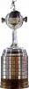
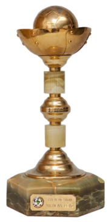
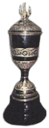
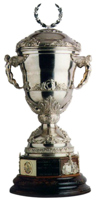

TÍTULOS INTERNACIONALES
| Título | Trofeo | Fecha | Rival | Resultado(s) | Penales | Global |
|---|---|---|---|---|---|---|
| Recopa Sudamericana | 13/08/2008 - 27/08/2008 | Arsenal | 1-3, 2-2 | - | 5-3 | |
| Libertadores |  | 20/06/2007 | Gremio | 3-0, 0-2 | - | 5-0 |
| Recopa Sudamericana | 07/09/2006 - 14/09/2006 | San Pablo | 2-1, 2-2 | - | 4-3 | |
| Copa Sudamericana | 06/12/2005 - 18/12/2005 | UNAM | 1-1, 1-1 | 4-3 | 2-2 | |
| Recopa Sudamericana | 24/08/2005 - 31/08/2005 | Once Caldas | 3-1, 2-1 | - | 4-3 | |
| Copa Sudamericana | 08/12/2004 - 17/12/2004 | Bolívar | 1-0, 2-0 | - | 2-1 | |
| Intercontinental |  |
14/12/2003 | Milan | 1-1 | 1-3 | - |
| Libertadores | 25/06/2003 - 2/07/2003 | Santos | 2-0, 1-3 | - | 5-1 | |
| Libertadores | 20/06/2001 - 28/06/2001 | Cruz Azul | 1-0, 0-1 | 3-1 | 1-1 | |
| Intercontinental | |
28/11/2000 | Real Madrid | 2-1 | - | - |
| Libertadores | 14/06/2000 - 21/06/2000 | Palmeiras | 2-2, 0-0 | - | 2-4 | |
| Copa de Oro |  | 14/07/1993 - 22/07/1993 | Atletico Mineiro | 0-0, 1-0 | - | 1-0 |
| Copa Master |  | 31/05/1992 | Cruzeiro | 2-1 | - | 2-1 |
| Recopa Sudamericana | 17/03/1990 | Atletico Nacional | 1-0 | - | 1-0 | |
| Supercopa |  | 22/11/1989 - 29/11/1989 | Independiente | 0-0, 0-0 | 3-5 | 0-0 |
| Intercontinental | |
21/03/1977 - 1/08/1977 | Borussia Mönchengladbach | 2-2, 0-3 | - | 5-2 |
| Libertadores | 23/11/1978 - 28/11/1978 | Deportivo Cali | 0-0, 4-0 | - | 4-0 | |
| Libertadores | 06/09/1977 - 11/09/1977 | Cruzeiro | 1-0, 0-1, 0-0 | 5-4 | 1-1 |
La Intercontinental contra el Real Madrid
El amanecer del 28 de noviembre de 2000 fue azul y amarillo. Aquel día, en Tokio, a 18.351 kilómetros de Buenos Aires, Boca alzaba la Copa Intercontinental luego de un triunfo por 2-1 ante Real Madrid que sacudió al mundo.